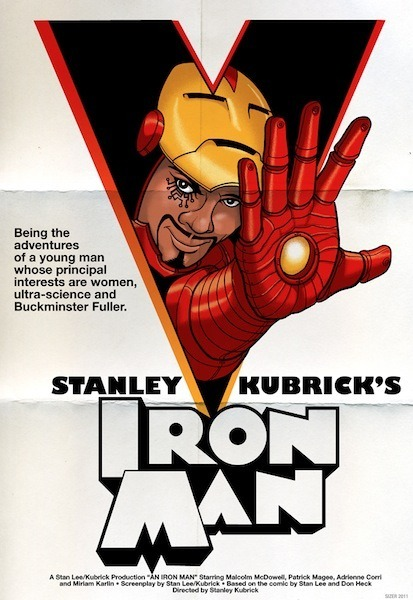

Sun, 09 Jan 2011 09:11:00 · ironman · kubrik · movie · poster · design
If Kubrick directed Iron Man...
Here’s what the film poster would look like…

Read more about it here.
Sun, 09 Jan 2011 09:11:00 · ironman · kubrik · movie · poster · design
Here’s what the film poster would look like…

Read more about it here.